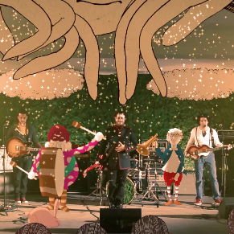
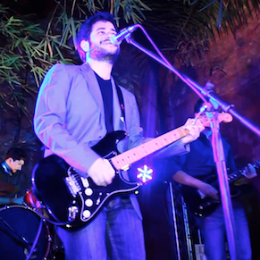

-
Solo Vamos A NadarVideo Musical Oficial
Dirigido y Editado por Noé Camacho, sumérgete en el misterio de nuestra mas reciente producción audiovisual.
- 
¿Dónde Estás?Video Musical Oficial
Dirigido por Pedro Justiniano, esta canción fué el primer sencillo del nuevo álbum.
-
Volver La historia detrás del concepto del album.
Entérate de las consecuencias del regreso y explora el colorido mundo de Volver a través de este cuento ilustrado y animado.
- 
De Vuelta (En Vivo)Grabado en nuestro concierto de regreso en Bar Lucia en la Zona Colonial de Santo Domingo.Toda una noche de magia, música y nostalgia para todos los presentes. ¡Que bueno estar de vuelta!